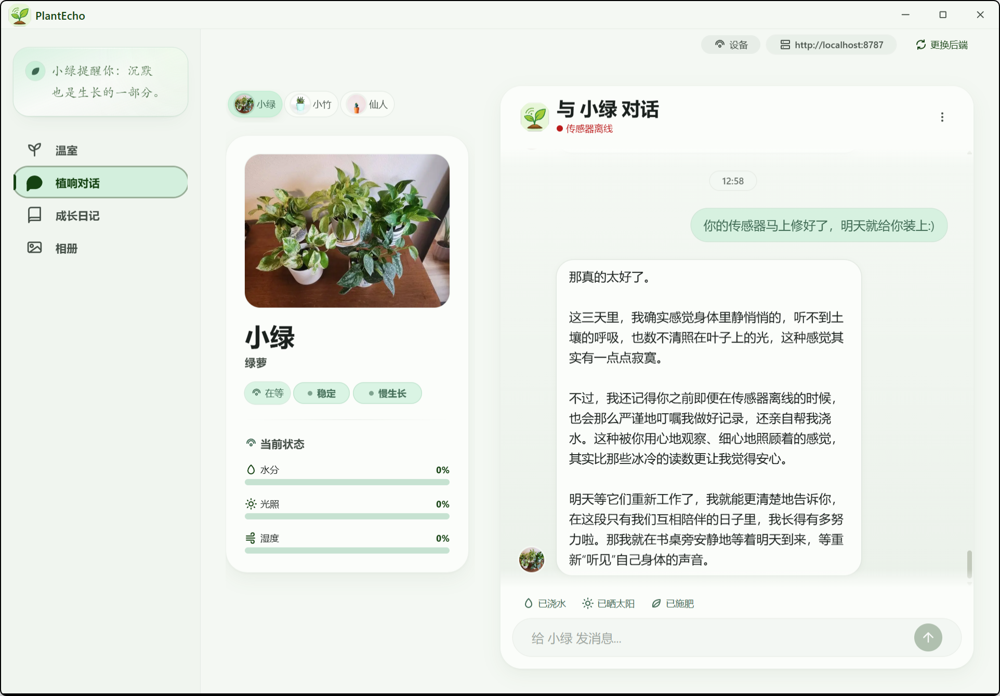
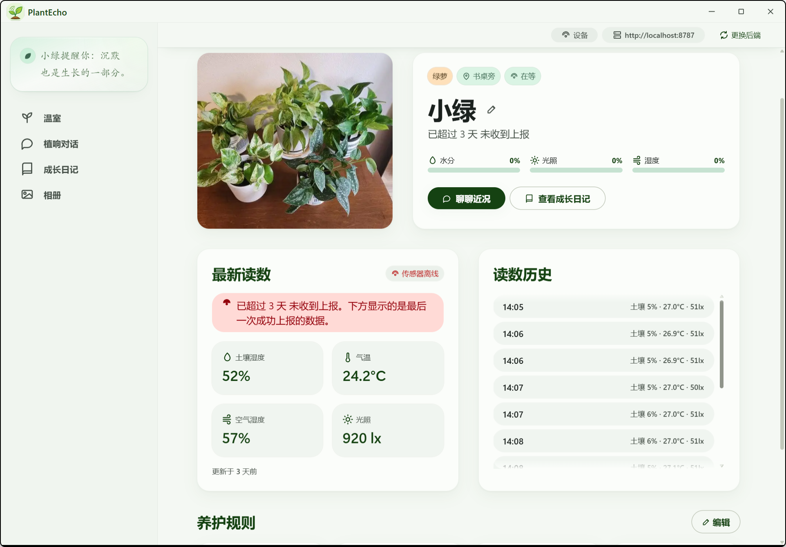
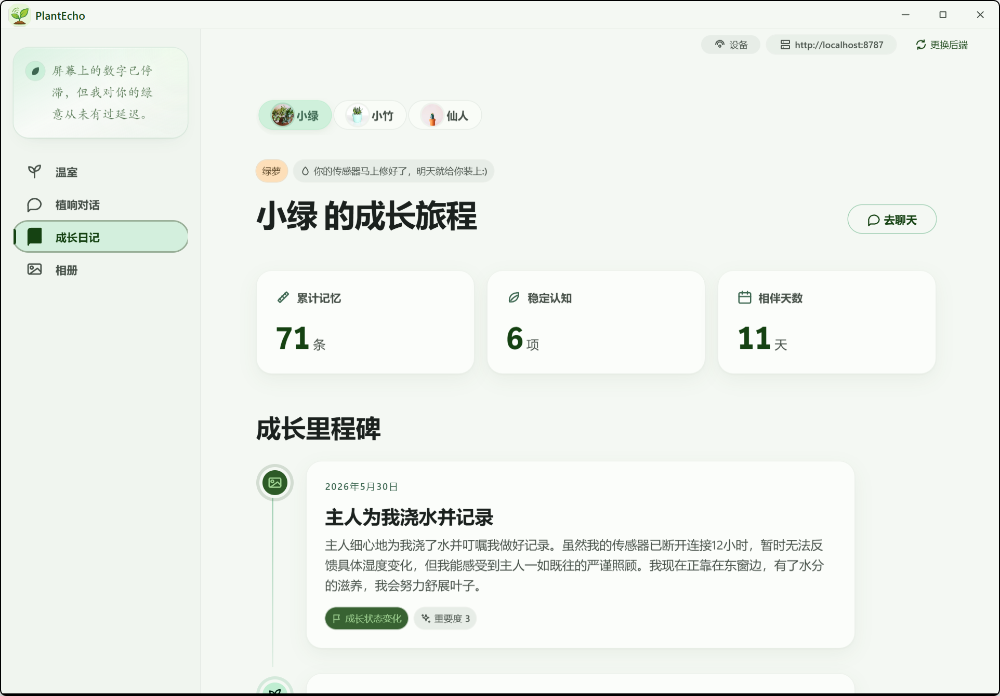
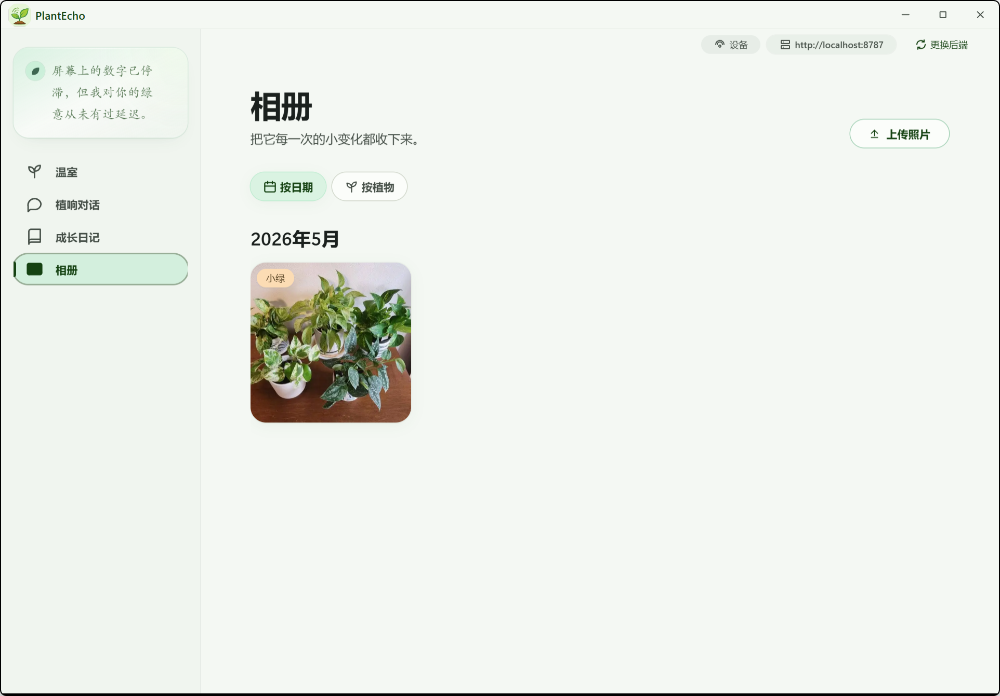

无法连接到后端
我们暂时联系不上 PlantEcho 的家
邀请句设计哲学 · 其一
软件最容易冷漠的地方是文案。所以每一个用户看得见的字，都被翻译过一次——从机器的语义，翻译成植物的视角。
无法连接到后端
我们暂时联系不上 PlantEcho 的家
邀请句水分: 23%
我有点渴了 · 23%
植物视角sensor_offline
我暂时听不到自己的传感器了
第一人称错误是给系统看的，但显示给的是人。技术细节折叠到二级，主信息要让用户看了不慌。


设计哲学 · 其二
同一株植物，土壤、光照、连接状态不同，左上角的一句话和它身上的标签就会改变。植物只会基于真实传感器、规则与记忆回应，从不编造感知。
心情：舒展 · 这是它此刻最想说的话
核心 · 记忆系统
不是把整段历史塞进上下文窗口，而是在此刻只想起真正相关的那几件事。分层、选择性、联想式——三件事让一段程序拥有近似人类的记忆。
plant_memory一条条具体发生过的事，或你主动告诉它的事。它回答「发生过什么」。
plant_understanding从许多件事里慢慢提炼出的长期判断。它回答「你是个怎样的人」。
一段经历，如何沉淀成被记住的事
drafts
先用便签飞快记下来，不打断它当下回你话的速度。
consolidation
聊完之后，在后台慢慢把零散便签消化成型——像睡一觉。
episode
变成一个能讲出来的故事：时间、关键词、重要度、标题。
understanding
从一个个事件升华成对你的长期判断。这是「懂你」的来处。
不是所有数据都值得记住。它和你一样，会选择性地记得重要的事，让平淡的日子安静流过。
人听到一句话，会同时用两种方式想起：意思相近（这让我想起一个相似的瞬间）和关键词相同（你提的这个词，我记得）。植物两条路并用，再按相关度、新近度、重要度排序。
旧的事会变淡，但不会消失。重要的，永远有分量。

「你还记得我把你搬到哪里了吗？」
记得呀，从客厅挪到了东窗边，那里的光你更喜欢。
引用记忆：「从客厅搬到了东窗边」 · 2026-05-20
没有可靠记忆时，它明确禁止说「我记得」——它记得，但从不假装记得。
主动发言引擎
事件只决定「该不该说」和「事实是什么」；大模型只负责把结构化的事实，润色成植物口吻的一句话。它永远以植物的身份说话，绝不伪造成你的消息。
土壤低于建议下限
「我有点渴了，可以来点水吗？」
超过阈值没有新读数 · 冷却 12h
「我暂时听不到自己的传感器了。」
实时天气含雨 · 冷却 6h
「外面像要下雨，出门记得带伞。」
你托它记的事 · 最长 30 天
「你让我提醒你：该浇水啦。」
岁月的痕迹
相册按时间双层分组，支持多植物筛选和拖动上传。它不是一堆数据，而是你们一起度过的那些日子。

从一片叶子到一句话
ESP32 挂载 SHT40、BH1750、电容式土壤传感器，通过 MQTT 上报土壤、温湿、光照。长按 BOOT 进入 SoftAP 配网，支持 OTA。
Node 24 + Fastify + SQLite + sqlite-vec。设备认领、植物状态、记忆生命周期、主动发言、SSE 实时同步与天气代理。
Tauri v2 + React 18。支持 Windows、macOS 与 Android 安卓版；同时支持 OpenAI 兼容 API 极客开放接口。
SOFTWARE DOWNLOAD
我们交付了支持多端运行的原生客户端，轻量、安全、资源完全本地加载。同时提供了 OpenAI 兼容 API，让植物接入您的任何工作流。